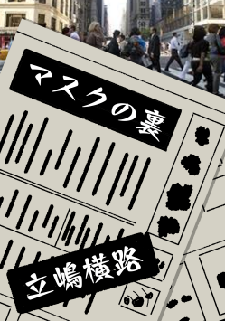
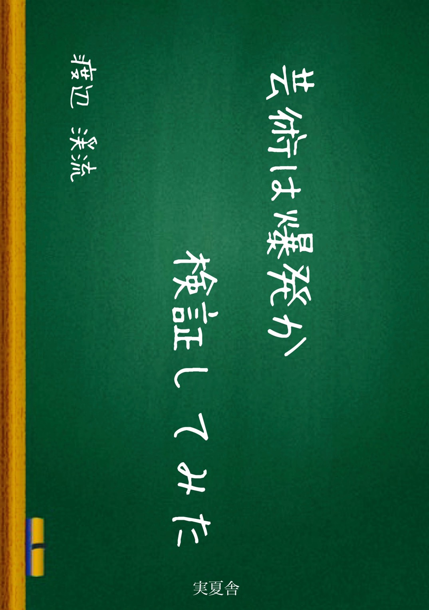
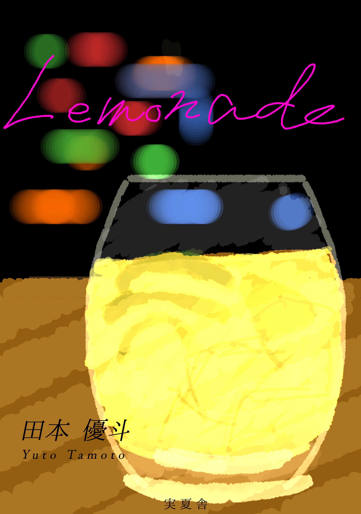

月間 予約・貸出ランキング
先月の武蔵野第一図書館における予約・貸出の多い本を紹介します。
貸出ランキング
1位
MoNoToNe
 | タイトル | MoNoToNe |
| タイトル（カナ） | モノトーン |
| 著者 | 榊原カリエッティ |
| 著者（カナ） | 榊原カリエッティ |
| 出版者 | ONOYAMA |
| 出版年月 | 2030/06 |
| 書誌種別 | 図書（和書） |
| 分類番号 | 913 |
| タイトルコード | 1000000000008 | ISBNコード | 978-4-7-9717620-9 |
| あらすじ | ある。その性格上、彼女は他人から嫌味を買ってしまい職場を転々としていた。彼女は現状を打破するべく、性格改変手術を受けるが、失敗し二重人格になってしまった！
成功したと虚偽の報告を受ける彼女の裏に誕生したもう1人の人格、通称白瀬は優しすぎる性格だった！
見えない自分との、なさそうでありそうな物語。 |
| 著者紹介 | |
詳細情報
2位
恋人ウエハース
| タイトル | 恋人ウエハース |
| タイトル（カナ） | コイビトウエハース |
| 著者 | 能登早苗 |
| 著者（カナ） | ノトサナエ |
| 出版者 | 古波社 |
| 出版年月 | 2030/01 |
| 書誌種別 | 図書（和書） |
| 分類番号 | 913 |
| タイトルコード | 1000000000011 | ISBNコード | 978-4-23-972285-8 |
| あらすじ | 高校3年生の須藤藍花は、1年の受験勉強の末、第一志望の大学に合格する。しかし、その大学では、一妻多夫制の模擬結婚が義務化されていた！恋愛経験ゼロの藍花に襲いかかる恋愛候補者の中から、王子様を見つけることはできるのか！？デビュー作にして第54回クロウリー恋愛小説大賞受賞作。 |
| 著者紹介 | 岐阜県北方町出身。未婚。｢恋人ウエハース｣にてデビューし、第54回クロウリー賞を受賞した。ミリオンセラー作品として｢青色のハンカチ｣｢スイ君｣｢点Pと線L｣がある。 |
詳細情報
3位
マスクの裏
|  | タイトル | マスクの裏 |
| タイトル（カナ） | マスクノウラ |
| 著者 | 立嶋横路 |
| 著者（カナ） | タテシマヨコミチ |
| 出版者 | ONOYAMA |
| 出版年月 | 2030/05 |
| 書誌種別 | 図書（和書） |
| 分類番号 | 913 |
| タイトルコード | 1000000000012 | ISBNコード | 978-4-1-8098436-7 |
| あらすじ | 表情が規制された世界で蔓延した不治の病。政府は予防策としてマスクの着用をやむなく義務化するが、規制解除とも捉えられるその声明に、市民は密かに行動をおこす。病気と制限のジレンマに悩まされる政府が出した結論とは！？「裏切り先生」の著者が贈る、矛盾にまみれた政治小説第3弾。 |
| 著者紹介 | 1982年生まれ。長野県立科町出身。デビュー作に｢家路｣｢勧誘植物｣｢オカン｣がある。座右の銘は｢心に2%のユーモアを｣。代表作、｢裏切り先生｣｢獅子舞わない｣｢河川敷にて｣ |
詳細情報
4位
芸術は爆発か検証してみた
|  | タイトル | 芸術は爆発か検証してみた |
| タイトル（カナ） | ゲイジュツハバクハツカケンショウシテミタ |
| 著者 | 渡辺渓流 |
| 著者（カナ） | ワタナベケイリュウ |
| 出版者 | 0 |
| 出版年月 | 2029/12 |
| 書誌種別 | 図書（和書） |
| 分類番号 | 913 |
| タイトルコード | 1000000000010 | ISBNコード | 978-4-5-7615049-9 |
| あらすじ | 念願の白鳥高校に入学した志田 匠は、入学したその日の放課後、理科室で1人机に突っ伏す泊ミナコを発見する。執拗に化学研究同好会に勧誘される匠。押しに弱い匠は流されて同好会に入ってしまう。そんな中彼女が掲げた目標とは…学校爆発！？
爆発に心を奪われた女子との危険な学校生活！ |
| 著者紹介 | 2001年生まれ。19歳にてデビューし、｢お影さま｣｢超学生｣など、学生時代を巧妙に描くのを得意とする奇才。現在、芳星大学数学教員。好きな食べ物はチョコバナナ。 |
詳細情報
5位
Lemonade
|  | タイトル | Lemonade |
| タイトル（カナ） | レモネード |
| 著者 | 田村優斗 |
| 著者（カナ） | タムラユウト |
| 出版者 | 実夏舎 |
| 出版年月 | 2026/07 |
| 書誌種別 | 図書（和書） |
| 分類番号 | 913 |
| タイトルコード | 1000000000009 | ISBNコード | 978-4-5-5125420-4 |
| あらすじ | 君はきっと汗だくだよね
だって、君は僕の心の中を駆け抜けてきたから
ちょっと酸っぱくて、ちょっと甘い
そんな絶妙なバランスが君を魅力的にする |
| 著者紹介 | |
詳細情報